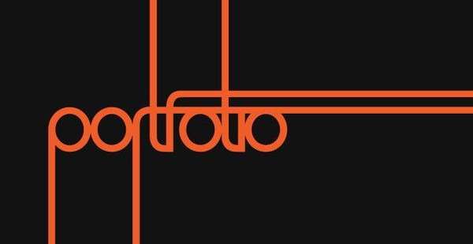
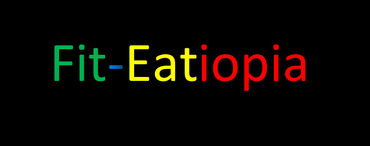
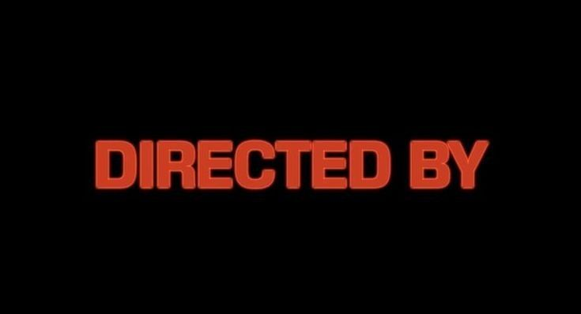

Projects
Personal Portfolio Website
This website is my personal portfolio, where I showcase my skills, projects, and interests. It serves as a reflection of my journey as a software engineering student, but it's still a work in progress. I plan to continuously improve it as I learn and grow, adding more content, refining the design, and integrating new features. As I develop my skills, I’ll keep updating this site with more projects and achievements, making it a true representation of my learning and development over time.
View detailsEthiopian Fitness Tracker
The Fitness Tracker is a project I’m working on as part of my FSE (Fundamentals of Software Engineering) class. It’s a collaborative effort with my classmates, where we are designing a web app that allows users to log workouts, track progress, and set fitness goals parallel to the Ethiopian way of living, including Ethiopian food and fasting. While we are still in the early stages of the project, we plan to continue developing it even after the class is over. Our goal is to turn this mockup into a fully functional app, and we’re excited about the potential it has to help people stay motivated and on track with their fitness journeys.
View detailsFilm & Cinematography Blog (Planned)
An upcoming project where I plan to share my thoughts on film and cinematography. This blog will feature my analyses of movies and short films, where I break down techniques like cinematography, editing, and narrative style. The goal is to create a space where I can discuss my admiration for film and continue learning by exploring different filmmaking styles.